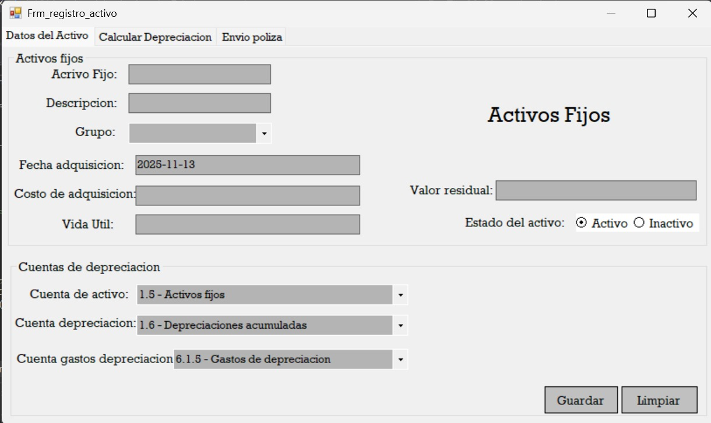
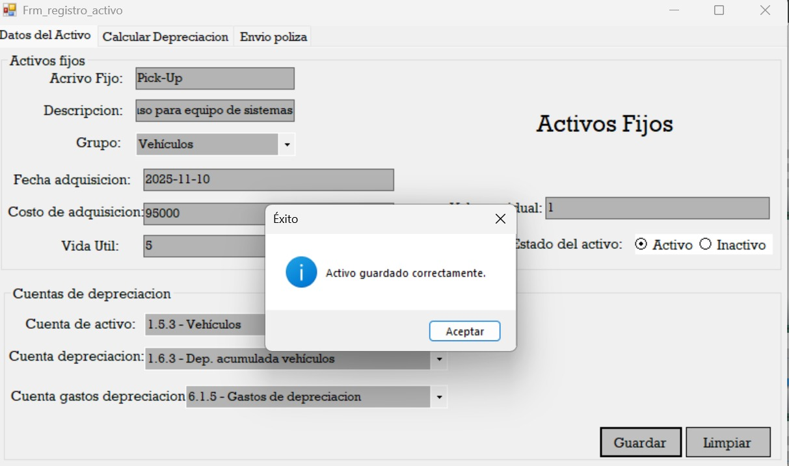
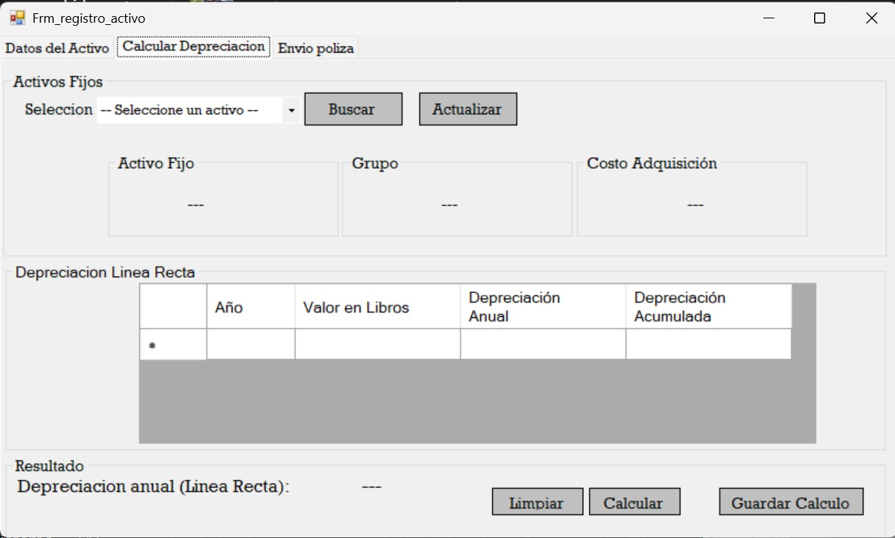
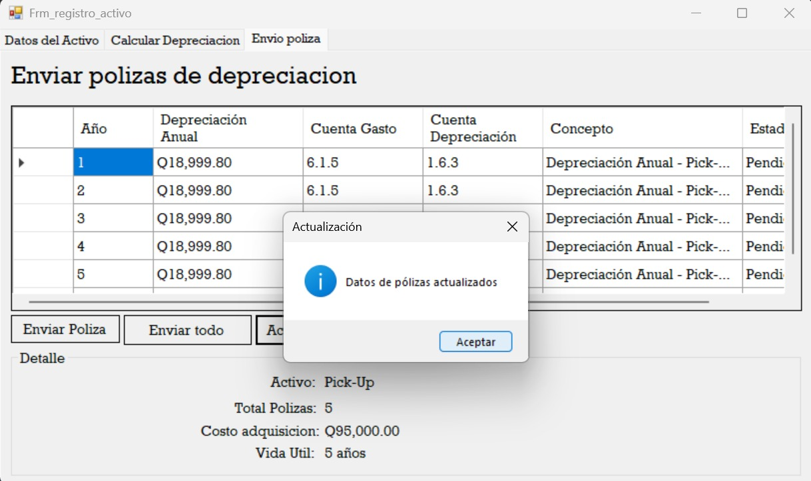
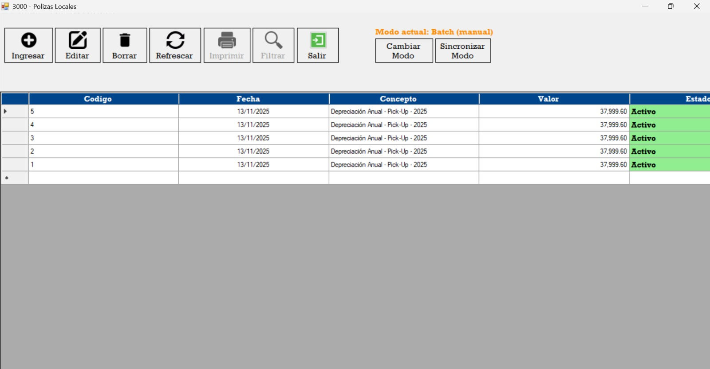

El sistema permite ingresar y registrar activos fijos nuevos en el sistema.
Al darle el botón de guardar, almacena el activo en la base de datos. Y automáticamente nos redirige al apartado de Calcular Depreciación.
Podemos seleccionar el activo fijo que queremos guardar para calcular su depreciación anual.
En el módulo de Línea Recta se realiza el cálculo de depreciación anual del activo fijo. Es necesario presionar primero el botón de Calcular.
En el apartado de Linea recta, hace el calculo de la depreciación anual del activo fijo. Es necesario darle primero al botón de calculo. Luego de darle en calcular y ver que el detalle del asiento contable este bien, se puede guardar en la base de datos dándole al botón de guardar Calculo. Luego de haber guardado el calculo, en el apartado de enviar póliza se puede enviar de 2 formas. Por todos los años calculados o año por año, es importante darle el el botón de actualizar para ver las polizas que se desea enviar.
Y en el proyecto del compañero al ejecutarlo debería de aparecer todas las pólizas que se enviaron
